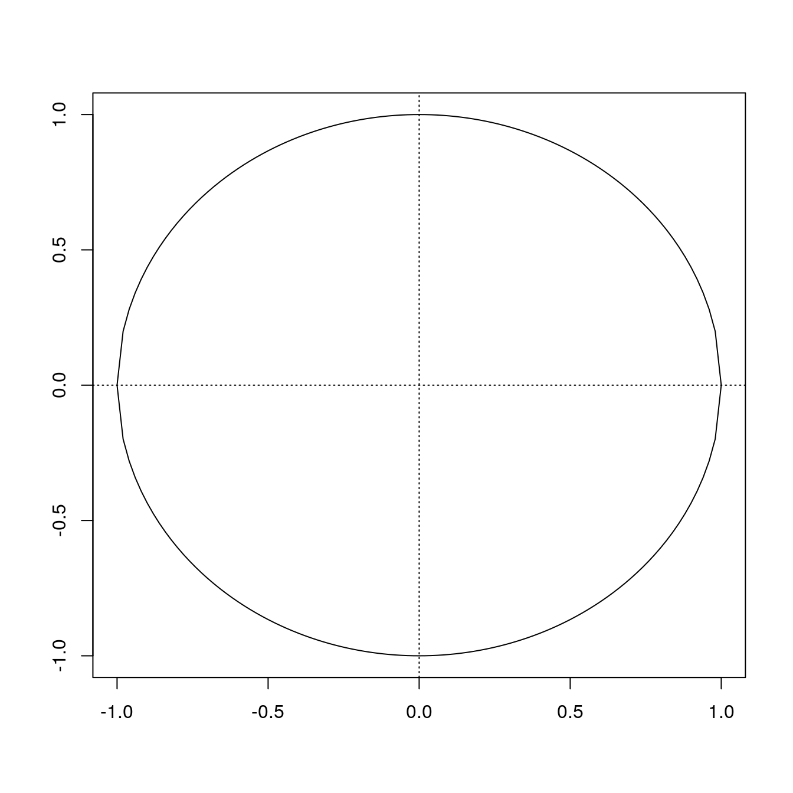
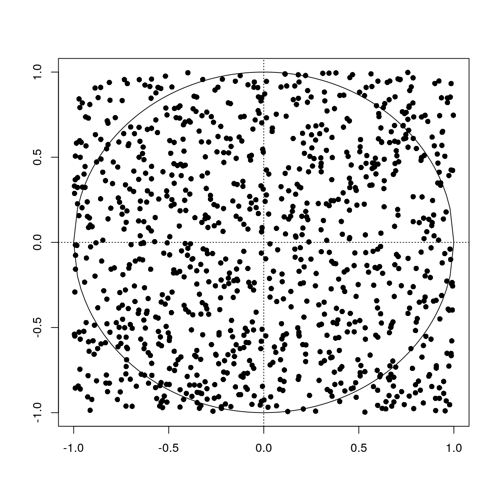
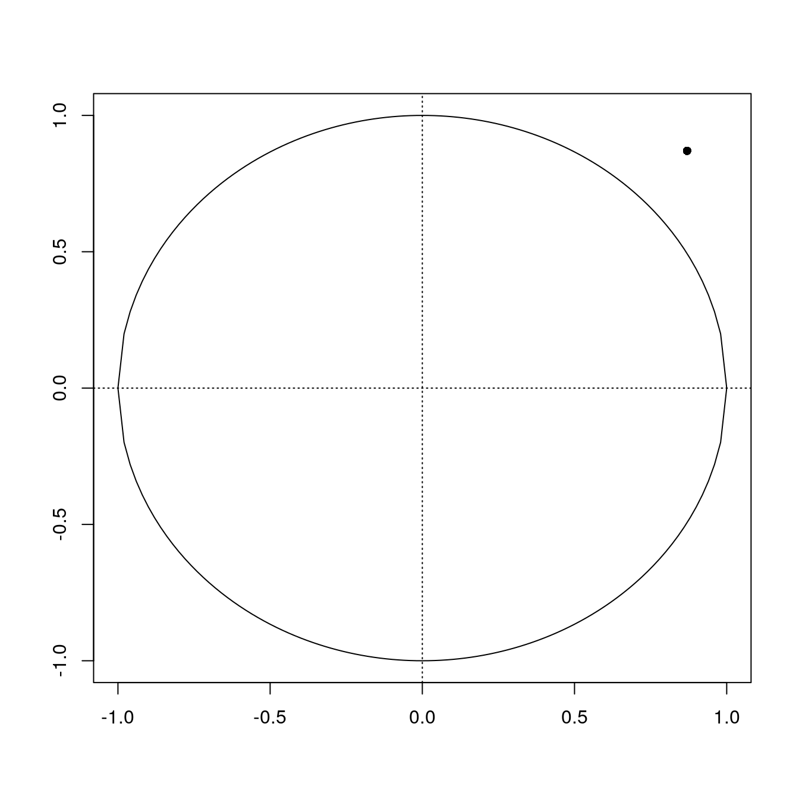
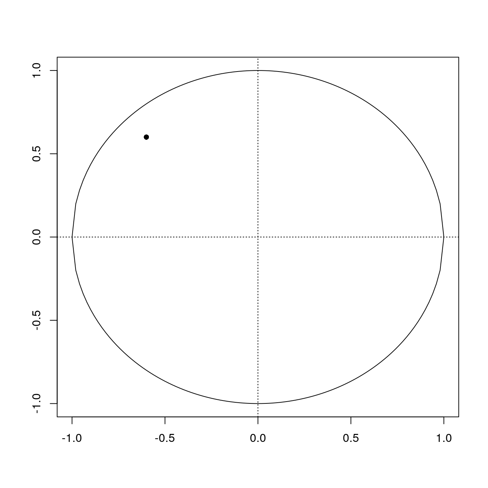

Last updated: 2023-10-13
Checks: 7 0
Knit directory: muse/
This reproducible R Markdown analysis was created with workflowr (version 1.7.1). The Checks tab describes the reproducibility checks that were applied when the results were created. The Past versions tab lists the development history.
Great! Since the R Markdown file has been committed to the Git repository, you know the exact version of the code that produced these results.
Great job! The global environment was empty. Objects defined in the global environment can affect the analysis in your R Markdown file in unknown ways. For reproduciblity it’s best to always run the code in an empty environment.
The command set.seed(20200712) was run prior to running
the code in the R Markdown file. Setting a seed ensures that any results
that rely on randomness, e.g. subsampling or permutations, are
reproducible.
Great job! Recording the operating system, R version, and package versions is critical for reproducibility.
Nice! There were no cached chunks for this analysis, so you can be confident that you successfully produced the results during this run.
Great job! Using relative paths to the files within your workflowr project makes it easier to run your code on other machines.
Great! You are using Git for version control. Tracking code development and connecting the code version to the results is critical for reproducibility.
The results in this page were generated with repository version 8ffc69d. See the Past versions tab to see a history of the changes made to the R Markdown and HTML files.
Note that you need to be careful to ensure that all relevant files for
the analysis have been committed to Git prior to generating the results
(you can use wflow_publish or
wflow_git_commit). workflowr only checks the R Markdown
file, but you know if there are other scripts or data files that it
depends on. Below is the status of the Git repository when the results
were generated:
Ignored files:
Ignored: .Rhistory
Ignored: .Rproj.user/
Ignored: r_packages_4.3.0/
Ignored: r_packages_4.3.1/
Untracked files:
Untracked: analysis/cell_ranger.Rmd
Untracked: analysis/complex_heatmap.Rmd
Untracked: analysis/sleuth.Rmd
Untracked: analysis/tss_xgboost.Rmd
Untracked: code/multiz100way/
Untracked: core.48169
Untracked: data/HG00702_SH089_CHSTrio.chr1.vcf.gz
Untracked: data/HG00702_SH089_CHSTrio.chr1.vcf.gz.tbi
Untracked: data/ncrna_NONCODE[v3.0].fasta.tar.gz
Untracked: data/ncrna_noncode_v3.fa
Untracked: data/netmhciipan.out.gz
Untracked: data/test
Untracked: export/davetang039sblog.WordPress.2023-06-30.xml
Untracked: export/output/
Untracked: women.json
Unstaged changes:
Modified: analysis/graph.Rmd
Note that any generated files, e.g. HTML, png, CSS, etc., are not included in this status report because it is ok for generated content to have uncommitted changes.
These are the previous versions of the repository in which changes were
made to the R Markdown (analysis/monte_carlo.Rmd) and HTML
(docs/monte_carlo.html) files. If you’ve configured a
remote Git repository (see ?wflow_git_remote), click on the
hyperlinks in the table below to view the files as they were in that
past version.
| File | Version | Author | Date | Message |
|---|---|---|---|---|
| Rmd | 8ffc69d | Dave Tang | 2023-10-13 | More random numbers |
I recently came across this question:
You have a function called random that randomly generates a number between 0 to 1. Use this to calculate pi.
Worded differently, the question is asking you to estimate pi using random numbers. As you can read in the script for Life of Pi:
Pi, the sixteenth letter of the Greek alphabet, which is also used in mathematics to represent the ratio of any circle’s circumference to its diameter - an irrational number of infinite length, usually rounded to three digits, as 3.14.
I later learned that the method used to answer this question is called Monte Carlo integration. The idea is that you randomly generate many pairs of numbers, \(x\) and \(y\), representing points on the Cartesian coordinate system and you check the ratio of points that lie inside a circle drawn on the same coordinate system to the total number of randomly generated points. This will give you an approximate estimation of the circle’s area that can be used to estimate pi.
(The question uses a random number generator that generates numbers between 0 and 1 but I’ll use -1 to 1 to go full circle.)
To see the method in action, let’s draw a unit circle, which is simply a circle of unit radius, i.e., a radius of 1.
circle <- function(x) sqrt(1 - x^2)
circle_inv <- function(x) -sqrt(1 - x^2)
plot_circle <- function(){
lim <- c(-1, 1)
plot(1, xlim = lim, ylim = lim, type = "n", ylab = '', xlab = '')
abline(h = 0, v = 0, lty = 3)
curve(circle, -1, 1, add = TRUE)
curve(circle_inv, -1, 1, add = TRUE)
}
plot_circle()
Now we randomly generate 1,000 (x,y) coordinates within the unit circle.
set.seed(1984)
x <- runif(1000, min = -1, max = 1)
y <- runif(1000, min = -1, max = 1)
plot_circle()
points(x, y, pch = 16)
The area of the square encompassing the unit circle is \((1+1)^2 = 4\), which represents all the dots. The area of the unit circle is the ratio of all the points inside the circle divided by all the points multiplied by 4.
Now, how do we check whether a point lies inside of our unit circle? We can use the Pythagorean theorem, which you may recall as \(x^2 + y^2 = z^2\). The hypotenuse in this case is the radius of the circle (which is 1), so therefore if \(\sqrt{x^2 + y^2} \leq 1\), then a point lies within the circle. Let’s illustrate with the point (0.87, 0.87).
x <- 0.87
y <- 0.87
sqrt((x^2+y^2))[1] 1.230366Plot point (0.87, 0.87).
plot_circle()
x <- 0.87
y <- 0.87
points(x, y, pch = 16)
Now the point (-0.6, 0.6).
x <- -0.6
y <- 0.6
sqrt((x^2+y^2))[1] 0.8485281Plot point (-0.6, 0.6).
plot_circle()
x <- -0.6
y <- 0.6
points(x, y, pch = 16)
But why is the area of unit circle an estimation of pi? Again as you may recall, the area of a circle is \(\pi r^2\). When we have a radius that is 1, such as the unit circle, \(area = \pi \times 1^2 = \pi\). Therefore the area of a unit circle is also the value of pi.
Now let’s implement this into a function that we can use to estimate pi.
estimate_pi <- function(n){
set.seed(1984)
x <- runif(n, min = -1, max = 1)
y <- runif(n, min = -1, max = 1)
sum(sqrt(x^2+y^2) < 1) / n * 4
}
sapply(c(100, 1000, 10000, 100000, 1000000, 5000000, 10000000, 50000000), estimate_pi)[1] 3.040000 3.096000 3.116000 3.135160 3.139988 3.141089 3.140766 3.141684Not the best way to estimate pi (since the estimation actually got worse between 5 and 10 million) but it illustrates one way in which random numbers can be useful.
sessionInfo()R version 4.3.1 (2023-06-16)
Platform: x86_64-pc-linux-gnu (64-bit)
Running under: Ubuntu 22.04.3 LTS
Matrix products: default
BLAS: /usr/lib/x86_64-linux-gnu/openblas-pthread/libblas.so.3
LAPACK: /usr/lib/x86_64-linux-gnu/openblas-pthread/libopenblasp-r0.3.20.so; LAPACK version 3.10.0
locale:
[1] LC_CTYPE=en_US.UTF-8 LC_NUMERIC=C
[3] LC_TIME=en_US.UTF-8 LC_COLLATE=en_US.UTF-8
[5] LC_MONETARY=en_US.UTF-8 LC_MESSAGES=en_US.UTF-8
[7] LC_PAPER=en_US.UTF-8 LC_NAME=C
[9] LC_ADDRESS=C LC_TELEPHONE=C
[11] LC_MEASUREMENT=en_US.UTF-8 LC_IDENTIFICATION=C
time zone: Etc/UTC
tzcode source: system (glibc)
attached base packages:
[1] stats graphics grDevices utils datasets methods base
other attached packages:
[1] workflowr_1.7.1
loaded via a namespace (and not attached):
[1] vctrs_0.6.3 httr_1.4.7 cli_3.6.1 knitr_1.44
[5] rlang_1.1.1 xfun_0.40 stringi_1.7.12 processx_3.8.2
[9] promises_1.2.1 jsonlite_1.8.7 glue_1.6.2 rprojroot_2.0.3
[13] git2r_0.32.0 htmltools_0.5.6.1 httpuv_1.6.11 ps_1.7.5
[17] sass_0.4.7 fansi_1.0.5 rmarkdown_2.25 jquerylib_0.1.4
[21] tibble_3.2.1 evaluate_0.22 fastmap_1.1.1 yaml_2.3.7
[25] lifecycle_1.0.3 whisker_0.4.1 stringr_1.5.0 compiler_4.3.1
[29] fs_1.6.3 pkgconfig_2.0.3 Rcpp_1.0.11 rstudioapi_0.15.0
[33] later_1.3.1 digest_0.6.33 R6_2.5.1 utf8_1.2.3
[37] pillar_1.9.0 callr_3.7.3 magrittr_2.0.3 bslib_0.5.1
[41] tools_4.3.1 cachem_1.0.8 getPass_0.2-2